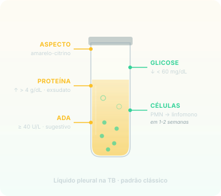

O líquido pleural tem 4 características reveladoras: exsudato, proteína alta, glicose baixa, e a transição mais didática da TB extrapulmonar — PMN inicial vira linfomononuclear em 1-2 semanas. Mas o que confirma o diagnóstico é a biópsia.
TB pleural é a forma extrapulmonar mais comum em adulto no Brasil. Forma-se quando o bacilo, vindo do pulmão (foco subpleural) ou hematogênico, atinge a pleura e dispara reação granulomatosa local com exsudação de líquido pra cavidade pleural.
Clínica:
Dor torácica (geralmente pleurítica, piora à inspiração profunda)
Febre persistente
Tosse possível (não obrigatória)
Sempre haverá derrame pleural (definição operacional)
A investigação parte de toracocentese (análise do líquido) + biópsia pleural (padrão-ouro).
Mecanismo
O líquido pleural conta a história imunológica
A análise do líquido pleural revela quatro características clássicas:
Exsudato (critérios de Light — ≥ 1 dos seguintes):
Proteína líquido/sérico > 0.5
LDH líquido/sérico > 0.6
LDH líquido > 2/3 do limite superior sérico
Proteína alta: tipicamente > 4 g/dL em TB pleural
Glicose baixa: < 60 mg/dL ou relação líquido/sérica < 0.5
Celularidade com dinâmica temporal específica:
Primeiros 7-14 dias do derrame: PMN (neutrófilos) predominam
Após 1-2 semanas: linfomononuclear (linfócitos + monócitos) dominam
A transição PMN → linfomononuclear é a assinatura imunológica da TB extrapulmonar — reflete a natureza granulomatosa da resposta: PMN respondem à inflamação aguda inicial; linfócitos T e monócitos dominam a fase organizada (formação do granuloma).

Líquido pleural na TB · padrão clássico — exsudato amarelo-citrino, proteína > 4 g/dL, glicose < 60 mg/dL, células com transição PMN → linfomononuclear em 1-2 semanas, ADA ≥ 40 U/L sugestivo.Duas regras-ouro
Pra TB pleural
Biópsia pleural é o padrão-ouro — agulha fechada (Cope/Abrams) ou toracoscopia. Sensibilidade ~80%. Histologia mostra granuloma + necrose caseosa; cultura do fragmento confirma micobactéria.
ADA ≥ 40 U/L + linfocitose + impossibilidade de biópsia = trata empírico — quando biópsia não é viável (paciente instável, indisponibilidade técnica), ADA elevada + predomínio linfocitário no líquido sustenta tratamento RIPE sem confirmação histológica.
Erro comum
Pedir BAR/cultura no líquido pleural como exame principal
Baciloscopia e cultura no líquido pleural rendem POUCO — a fisiopatologia é predominantemente imune (resposta de hipersensibilidade granulomatosa), com poucos bacilos no líquido. Sensibilidade da BAR no líquido pleural é < 5%; cultura no líquido é < 30%.
A biópsia pleural (que pega tecido + bacilo intracelular + granuloma) é superior — sensibilidade da cultura do fragmento é ~70-80%.
Conduta correta: toracocentese pra análise bioquímico-citológica + ADA + biópsia pleural. BAR/cultura no líquido segue, mas não é a aposta principal.
Recuperação ativa · 1
Qual é o padrão-ouro pra diagnóstico de TB pleural, e por que a baciloscopia/cultura no líquido pleural tem rendimento baixo?
O padrão-ouro é a biópsia pleural (agulha fechada — Cope/Abrams — ou toracoscopia), com sensibilidade ~80% através de histologia (granuloma + necrose caseosa) + cultura do fragmento (~70-80%).
A baciloscopia/cultura no líquido pleural tem rendimento baixo (BAR < 5%, cultura < 30%) porque a fisiopatologia da TB pleural é predominantemente imune (hipersensibilidade granulomatosa) — há poucos bacilos no líquido, que é majoritariamente exsudato inflamatório linfocitário. O bacilo está no tecido pleural, não em suspensão no líquido — por isso biópsia (tecido) ganha de cultura (líquido).
Recuperação ativa · 2
Em paciente com derrame pleural exsudativo linfocitário + ADA pleural de 75 U/L, sem possibilidade técnica de biópsia, qual é a conduta?
Tratar empiricamente como TB pleural com RIPE. ADA ≥ 40 U/L (no caso, 75 — muito sugestivo) + linfocitose + impossibilidade de biópsia constitui a tríade que o Manual MS-TB 2024 e a SBPT aceitam como sustentação diagnóstica suficiente pra início de tratamento.
ADA não é patognomônica — linfomas, empiemas e artrite reumatoide também podem elevar ADA — mas em conjunto com clínica compatível (dor torácica + febre + derrame), ausência de DDx óbvio e linfocitose, sustenta empírico. Cultura do líquido segue em paralelo, mas o RIPE começa imediatamente.